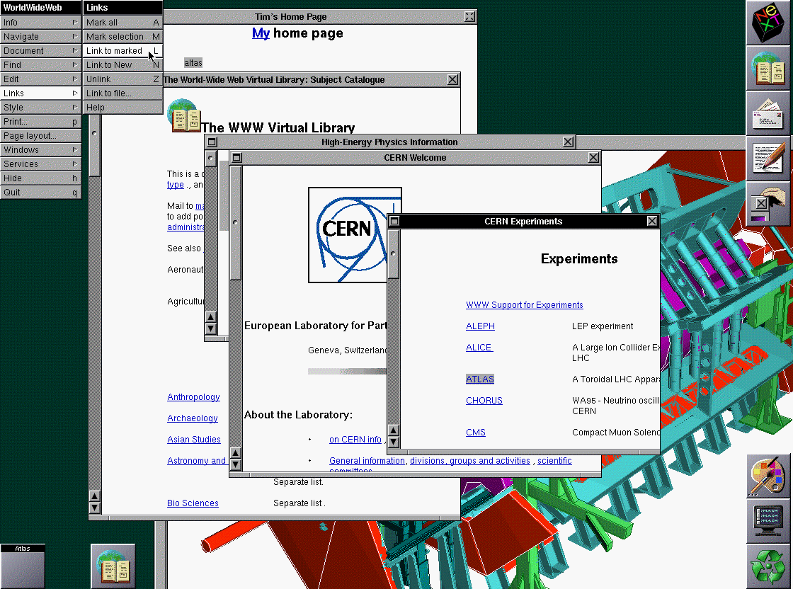
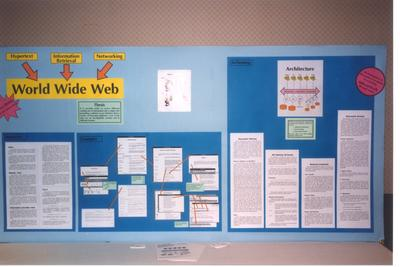

How a simple idea connected the world
A Little History of the World Wide Web
The people, ideas, and decisions that helped the Web grow
1945–1995
The Web began as an idea about connected information
Long before websites existed, researchers imagined documents that could lead readers directly to related information.
- 1945: Vannevar Bush described the Memex, a device for following links between documents Memex: Bush imagined a desk-like machine that stored documents on microfilm and allowed people to create trails between related items. It was a concept, not the modern Web.
- 1960s: Doug Engelbart built a system with hypertext, editing, email, and a mouse
- 1965: Ted Nelson coined the word hypertext Hypertext: Text that contains connections to other information. Today, we usually follow those connections by selecting a link.
Ted Nelson. Image from the W3C 10th Anniversary history presentation.
Key idea: Information becomes more useful when people can follow meaningful connections.
ENQUIRE tested connected notes at CERN
While working as a consultant at CERN, Tim Berners-Lee wrote a program called ENQUIRE.
- Each piece of information was stored as a “node”
- Nodes could be connected with two-way links
- The system helped organize people, projects, and ideas
ENQUIRE was not yet the Web, but it gave Berners-Lee a working model for linking information.
Source: W3C Web history, 1980 entry
A proposal turned the idea into a plan
Tim Berners-Lee circulated “Information Management: A Proposal” at CERN in March 1989.
- CERN had information spread across many computers and systems
- The proposal described a global hypertext system
- People could connect information without placing it all in one database
The goal was practical: make complicated information easier to find, connect, and share.
Source: W3C Web history, 1989 entry
The first working Web was ready
By the end of 1990, the essential pieces of the Web were working at CERN.

The WorldWideWeb browser and editor on a NeXT computer. Image from W3C.
- Browser: WorldWideWeb displayed and edited pages
- Server: info.cern.ch stored and delivered information
- Web page: The first page explained the WWW project
For the first time, someone could use a browser to request a linked page from a Web server.
Source: W3C Web history, 1990 entry
The Web moved beyond its first laboratory
- 1991: Browser software and project files became available over the Internet
- December 1991: The first Web server outside Europe was installed at SLAC in California SLAC: The Stanford Linear Accelerator Center installed a server on December 12, 1991. This was an important step in the Web’s international growth.
- 1992: New graphical browsers appeared, including Erwise and Viola
- By November 1992, the W3C history lists 26 reasonably reliable servers
The Web could grow because people on different computers could use
the same basic system.
A Web project poster from 1991 
Source: W3C Web history, 1991–92 entries
Two decisions helped the Web take off
Mosaic arrived
A graphical browser made the Web easier to use on common computers Mosaic: NCSA released its first alpha version for X in February. By September, working versions were available for X, Windows, and Macintosh.Marc Andreessen. Image from the W3C 10th Anniversary history presentation.
The Web stayed open
CERN declared that Web technology could be used by anyone without fees April 30, 1993: CERN’s directors issued the declaration that made World Wide Web technology freely usable, with no fees payable to CERN.
Growth accelerated
Known HTTP servers grew from about 50 in January to more than 200 in October
Ease of use plus open access created the conditions for rapid worldwide adoption.
Source: W3C Web history, 1993 entry
Rapid growth created a need for coordination
- The first International World Wide Web Conference drew far more applicants than it could hold
- More than 1,500 Web servers were registered by June
- The original CERN server was handling 1,000 times its 1991 load
- On October 1, the World Wide Web Consortium was founded W3C: The World Wide Web Consortium was created to help organizations cooperate on the Web’s core technologies and standards.Alan Kotok. Image from the W3C 10th Anniversary history presentation.
Shared standards helped the Web remain one connected system instead of breaking into incompatible pieces.
Source: W3C Web history, 1994 entry
The Web entered public life
By 1995, the Web was no longer just a research project.
- World leaders discussed the emerging “information society”
- CERN demonstrated the Web to 250 European reporters
- Thirty high-school students helped the reporters “surf the Web” on 60 computers
- International conferences and new organizations supported the growing Web community
The Web had become a new way for ordinary people to explore and share information.
Source: W3C Web history, 1995 entry
The Web grew because it was connected, useful, open, and shared
- Connected: Links let people move between related information
- Useful: The first Web solved a real information problem
- Open: People could use the technology without paying CERN
- Shared: Common standards allowed different computers to work together
Today’s Web grew from decades of ideas—and from the decision to let everyone build on them.
Professor Sable · Emeritus Institute · Last Updated: 8/31/26